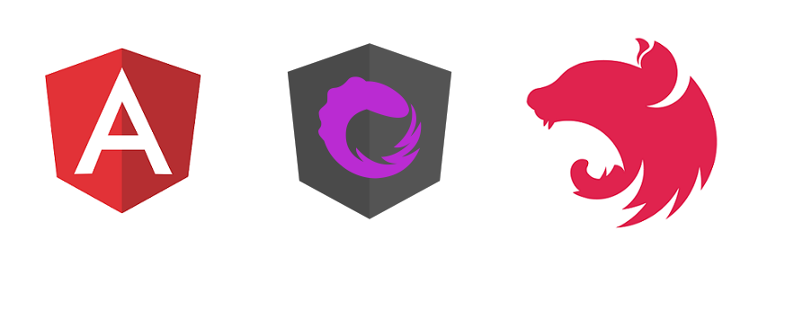

<todosws-navbar></todosws-navbar>
<ng-container *transloco="let t">
  <div class="container">
    <h1>{{ t.title }}</h1>
    <div class="row">
      <div class="col-md-3">
        <todosws-counter></todosws-counter>
        <todosws-counter-active></todosws-counter-active>
        
      </div>
      <div class="col-md-9">
        <p [innerHTML]="t.baseline"></p>
        <todosws-todo-list></todosws-todo-list>

        <div>Message: {{ hello$ | async | json }}</div>
      </div>
    </div>
  </div>
</ng-container>
